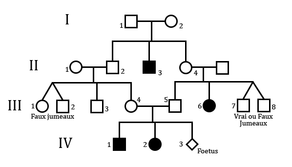
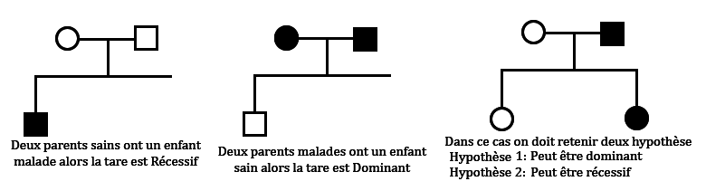
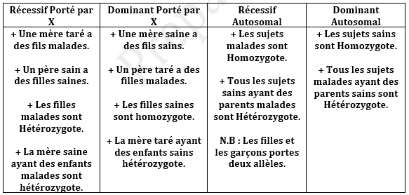
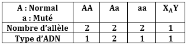
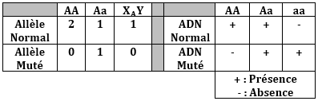
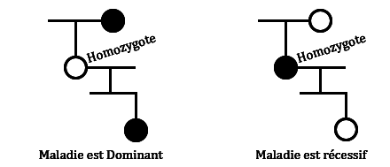
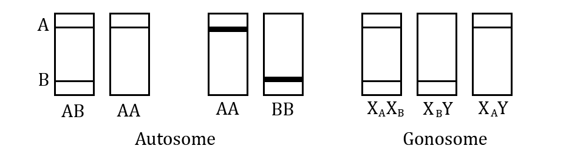

La Génétique Humaine
N.B : que la génétique humaine obéit aux même loi et principe de la génétique mendélienne cependant elle n’est pas proportionnelle elle se base sur :
• L’étude d’un pédigrée (arbre généalogique).
• L’étude de l’ADN (électrophorèse).
• L’étude des chromosomes.
1- Etude du pédigrée :
- Génotype : pour déterminer un génotype du pédigrée on doit d’abord répondre aux certaines questions :
+ Si l’allèle de la maladie (TARE) est-il Récessif ou Dominant ?

Réponse : Voir tous les cas possibles :

Suivez les réglement dans le tableau :

- ADN :
Exemple : celui qui comprend 2 il est hybride et celui qui a 1 seul type d’ADN il est de race pure.


- Cas des générations pour déterminer l’allèle de la maladie :

- Cas des Zymogrammes :

- Les Risques :
+ Cas : Maladie récessif autosomal
Fréquence des hybrides = 1/30
> Si deux parents sont sains ayant un enfant sain le risque d’avoir un enfant malade : 1/30×1/30×1/4
> Si deux parents sont sains ayant un enfant malade le risque d’avoir un enfant malade : 1×1×1/4
> Enfant malade : 1/4
> Garçon malade : 1/4=1/2×1/2
> Parmi les garçons : 1/2=1×1/2
> Parmi les filles : 0=1×0
> Si le père est taré et la mère est saine ayant un enfant sain le risque d’avoir un enfant malade : 1×1/30×1/2
> Si le père est taré et la mère est saine ayant un enfant malade le risque d’avoir un enfant malade : 1×1×1/2
> Enfant malade : 1/2
> Garçon malade : 1/2×1/2
> Parmi les garçons : 1/2
> Parmi les filles : 1/2
> Si deux parents sont sains ayant une fille malade et un garçon sain et mariée avec une fille saine le risque d’avoir un enfant malade : 2/3×1/30×1/4
Remarque :
Le Diagnostic prénatal : est une technique utiliser pour déterminer la situation du fœtus au moment de la grossesse les types de ce technique sont Caryotype et Zymogramme.
N.B : D’après tous ces interprétations on peut déterminer les génotypes des individus
- Les Hypothèses : dans les exercices si on ne peut pas déclarer l’allèle de la maladie on retient et rejeté des hypothèses possibles d’après le pédigrée puis on peut confirmer l’allèle de la maladie d’après l’analyse des électrophorèses ou Zymogrammes ou Caryotypes, les hypothèses qui existe sont :
> Hypothèse 1 : Gène autosomal récessif.
> Hypothèse 2 : Gène autosomal dominant.
> Hypothèse 3 : Gène porté par X récessif.
> Hypothèse 4 : Gène porté par X dominant.
> Hypothèse 5 : Gène porté par Y.
- Les anomalies chromosomiques (sur les caryotypes) :
1 - Syndrome de Klinefelter : qui comporte 2n = 44A + XXY (stérile, Régression de C.S.S et Retard mentale…)
2 - Syndrome de Down (Trisomie 21) : 2n = 45A + XY chez le mâle et 2n = 45A + XX chez la femelle
3 - Syndrome de Theiner : 2n = 44A + X
4 - Autres Syndromes : + 2n = 44A + XXX / + 2n = 44A + XYY / + 2n = 44A + Y
+ Hémophilie : est une maladie sanguine héréditaire qui provoque la coagulation sanguine et la maladie a pour allèle porté par X et récessif gonosomale (marqué par l’absence de coagulation sanguine).
+ Daltonisme : est une trouble de vision de couleur l’allèle est récessif et porté par X.
+ Albinisme : est une maladie héréditaire et récessif autosomal. (est une mutation responsable à l’absence d’une pigmentation sombre est appelé Mélanine) domine le couleur normal.